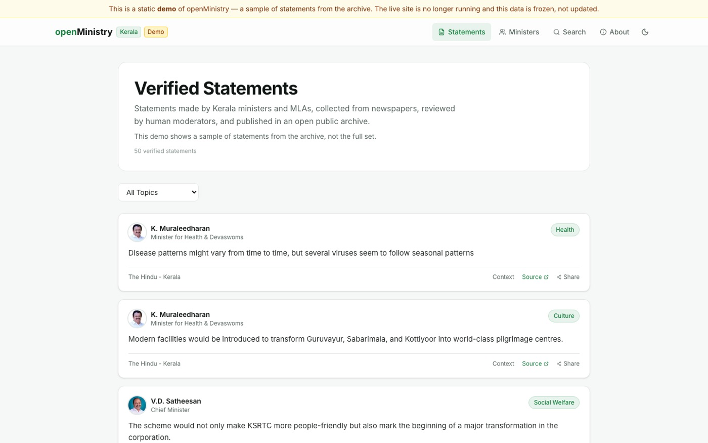

Cover story · openMinistry
A public record of what Kerala's ministers say
Nobody was keeping track of what politicians said in public, so I worked out what a trustworthy record would need and built it: 600+ checked statements from 140 public representatives, searchable and open to everyone.

Before any code, the question was what should count. A statement had to be a direct quote, dated, sourced and tied to one person, and nothing could go public until a person had checked it. From there the process was clear: the system reads Kerala's newspapers, an AI model picks out what each minister or MLA said, and a moderator approves or rejects it before it reaches the site.
Approved statements go to a searchable website and an open API, so journalists and researchers can reuse the data. I designed and built all of it, from the review workflow to the servers. The full platform is offline for now because hosting costs money, but a static demo with a sample of the archive is still up.
Built with Python · Next.js · PostgreSQL · Docker